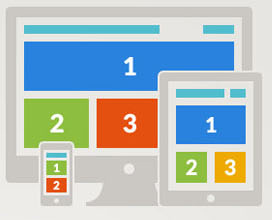

Tu navegadorno soporta los requerimientos de impress.js, asi que se te presentara una version simple de la presentación.
Para una mejor experiencia por favor utilice la ultima version de Chrome, Safari or Firefox como navegador.
RESPONSIVE WEB DESIGN

Que es?
Un nuevo modo de afrontar el diseño web flexivilizando la capa de presentación para que se adapte al tamaño de resolucción del dispositivo en el que se visualiza la pagina
En que consiste
Diseño Web adaptable a diferentes dispositivos, sin crear diferentes versiones de la web para cada uno de estos
De donde viene
Ethan Marcote lo acuño en un artículo en "a list apart" un famoso site de diseño y desarrollo Web basado en estandares
Responsive Design
Terminos
- Fluid Grids: diseño fuido donde la grilla se redimenciona de acuerdo al tamaño de la pantalla
- Flexible Images: donde no se tiene anchos fijos, pero se mueven y escalan el ancho de la cuadrícula flexible
- CSS Media Queries: de forma selectiva se muestran estilos CSS basados en orientacion, resolución de pantalla
- Screen Resolutions: resoluciones tipicas para Desktops, Laptops, Smartphones
lo recomienda de sobremanera
Ventajas
* Disminucion de costos de desarrollo,
* Evita la repeticion de contenido (SEO)
* Mejora la experiencia de usuarios, la web que visita es la misma en cualquier dispositivo
Desventajas
* No adapta los contenidos
* No adapta la funcionalidad JavaScript o Flash, hay que tener alternativas
* No tiene encuenta el dispositivo con el que interactuamos, solo e tamaño de la pantalla
Sabias que ...
Adaptable (múltiples diseños de ancho fijo)
Sensible (múltiples diseños de grilla ajustable)